Un espace lumineux et agréable à vivre.
Climatisation, télévision, Internet Wi-Fi et table à manger: un lieu idéal pour se retrouver après la plage, partager un repas ou profiter d'un moment calme à la maison.
Bagnols-en-Forêt
Charmante maison de vacances pour 6 personnes, avec piscine privée, à proximité du village et à environ 20 minutes de la mer.
Entièrement rénovée, la Maison B-Sun accueille famille et amis dans un cadre calme, lumineux et facile à vivre. Vous y trouverez 3 chambres, 3 salles de bain, une piscine privée, le Wi-Fi, la télévision et 2 places de parking.
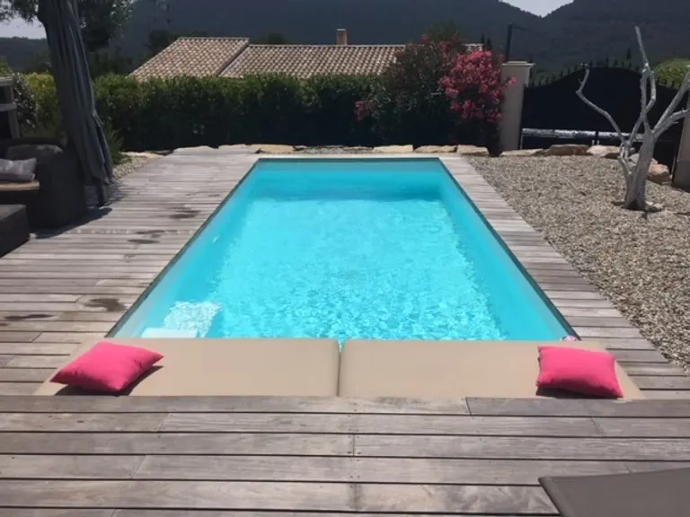
6 personnes
3 chambres
3 lits doubles
3 salles de bain
Piscine privée
Wi-Fi
2 places de parking
1 km du village
Environ 20 min de la mer
La maison
Découvrez votre prochaine maison de vacances dans le sud de la France. Entièrement rénovée, la Maison B-Sun a été pensée pour accueillir confortablement jusqu'à 6 personnes, en famille ou entre amis.
Avec ses 3 chambres, ses 3 salles de bain, sa piscine privée de 3 x 7 m, son Wi-Fi, sa télévision et ses 2 places de parking, elle offre un cadre simple, agréable et pratique pour profiter pleinement du séjour.
Idéalement située à Bagnols-en-Forêt, la maison se trouve à seulement 1 km du village, à environ 20 minutes des plages, et permet de rayonner facilement dans la région.
À proximité de Sainte-Maxime, Cannes, Saint-Tropez, Nice et Fayence.
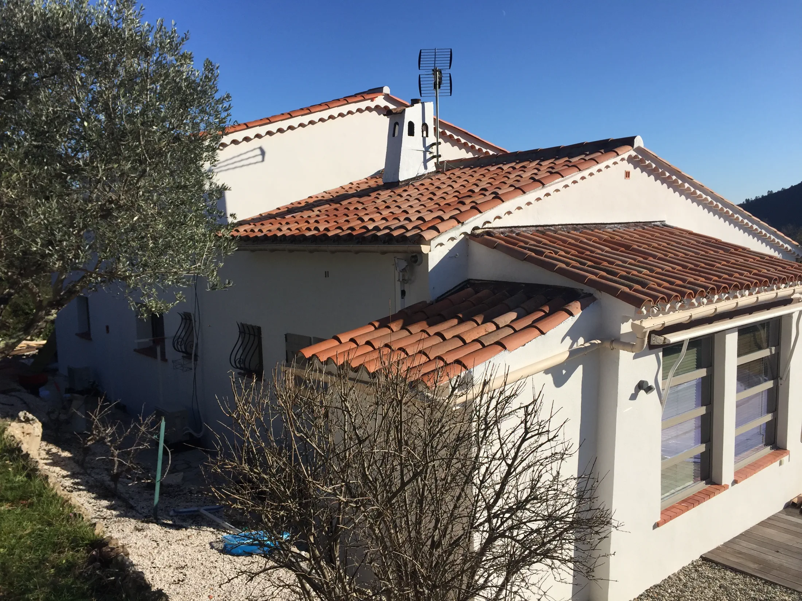
Les intérieurs
La maison réunit 3 chambres, 3 salles de bain, un séjour lumineux, une cuisine équipée et un coin bureau. L'ensemble conserve une atmosphère claire, sobre et reposante.
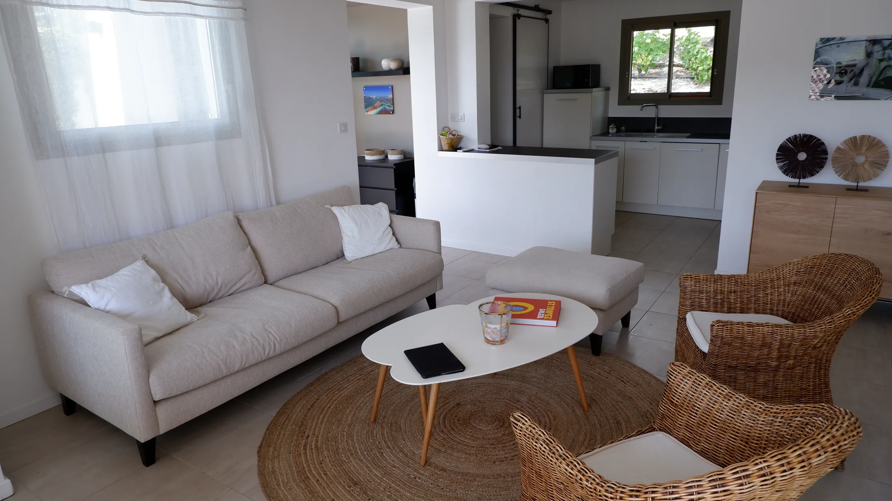
Climatisation, télévision, Internet Wi-Fi et table à manger: un lieu idéal pour se retrouver après la plage, partager un repas ou profiter d'un moment calme à la maison.
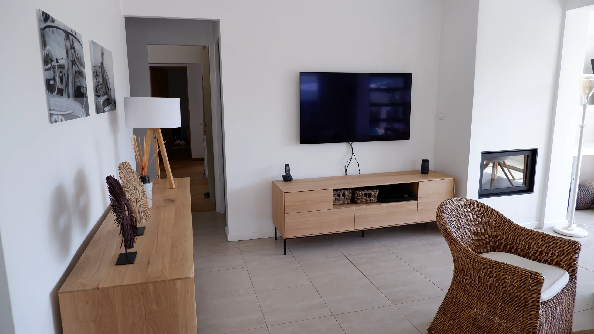
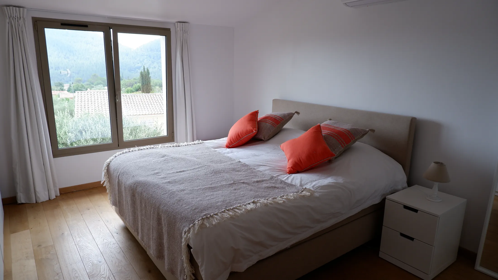
Une chambre de 12 m2 au rez-de-chaussée, climatisée, avec porte-fenêtre donnant sur le jardin, penderie, lit double de 1,60 m, salle de bain avec douche italienne et toilette séparée.
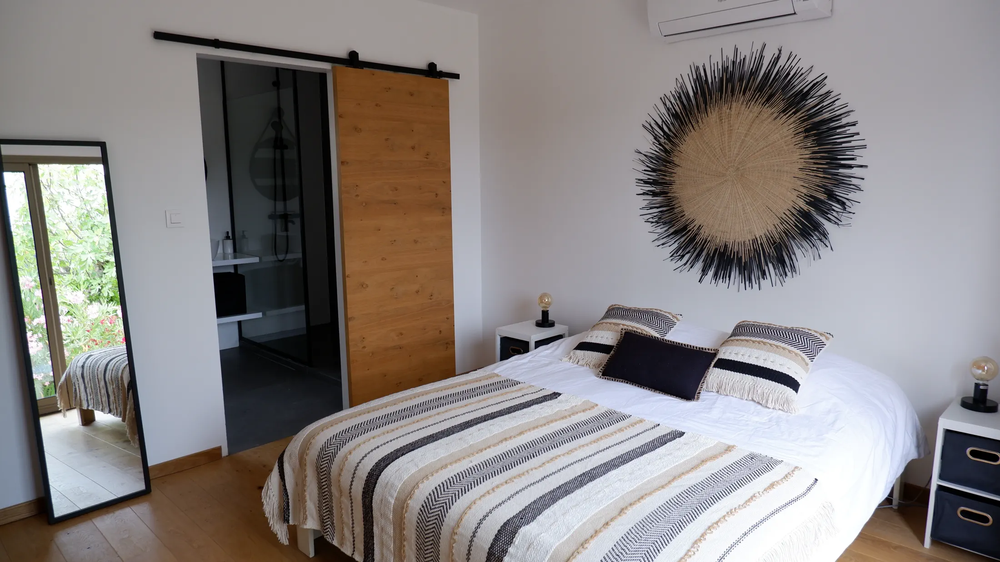
Une chambre de 20 m2 au rez-de-chaussée, climatisée, avec porte-fenêtre donnant sur le jardin, penderie, lit double de 1,60 m et salle de bain attenante.
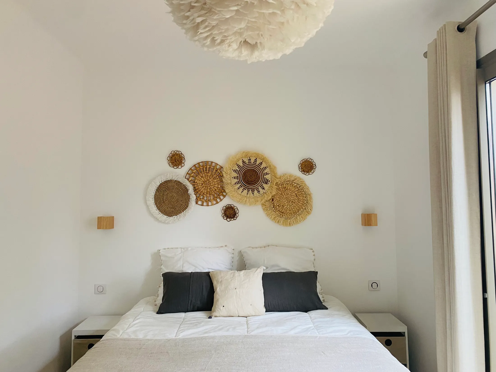
Une chambre de 20 m2 au premier étage, climatisée, avec fenêtre sur le jardin, penderie, lit double de 1,80 m et salle de bain attenante.
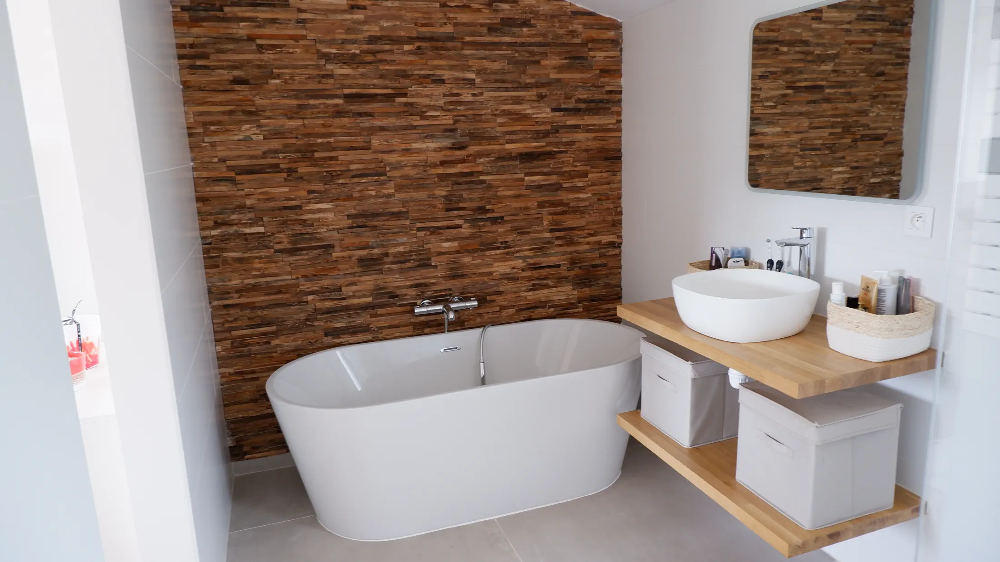
Trois salles de bain apportent un vrai confort au quotidien, que l'on vienne en famille ou entre amis pour un long week-end ou de vraies vacances.
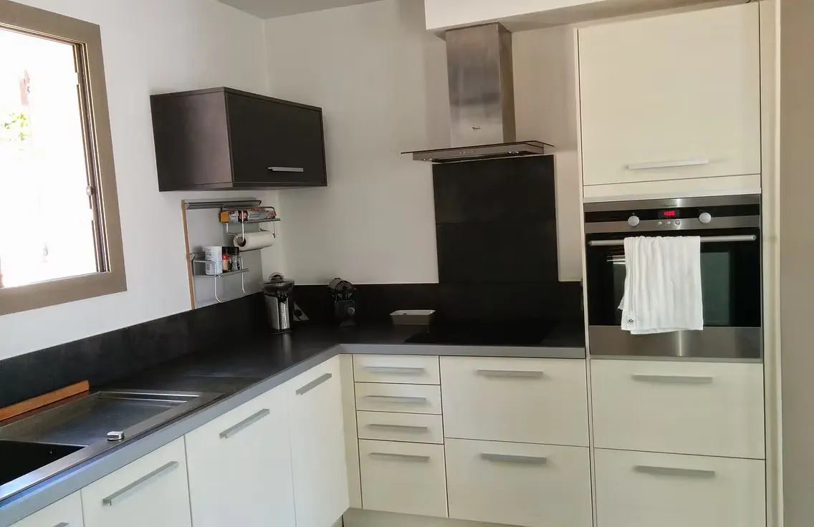
Four, taque à induction, frigo, lave-vaisselle, machine Nespresso et micro-ondes. Un cellier complète l'ensemble avec un deuxième frigo, une machine à laver et un séchoir.
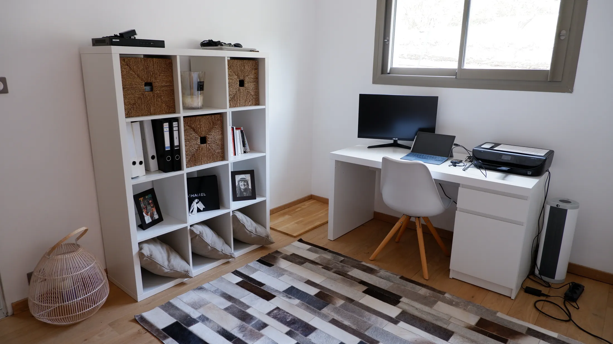
Un coin bureau simple et pratique pour lire, organiser la journée ou travailler ponctuellement pendant le séjour.
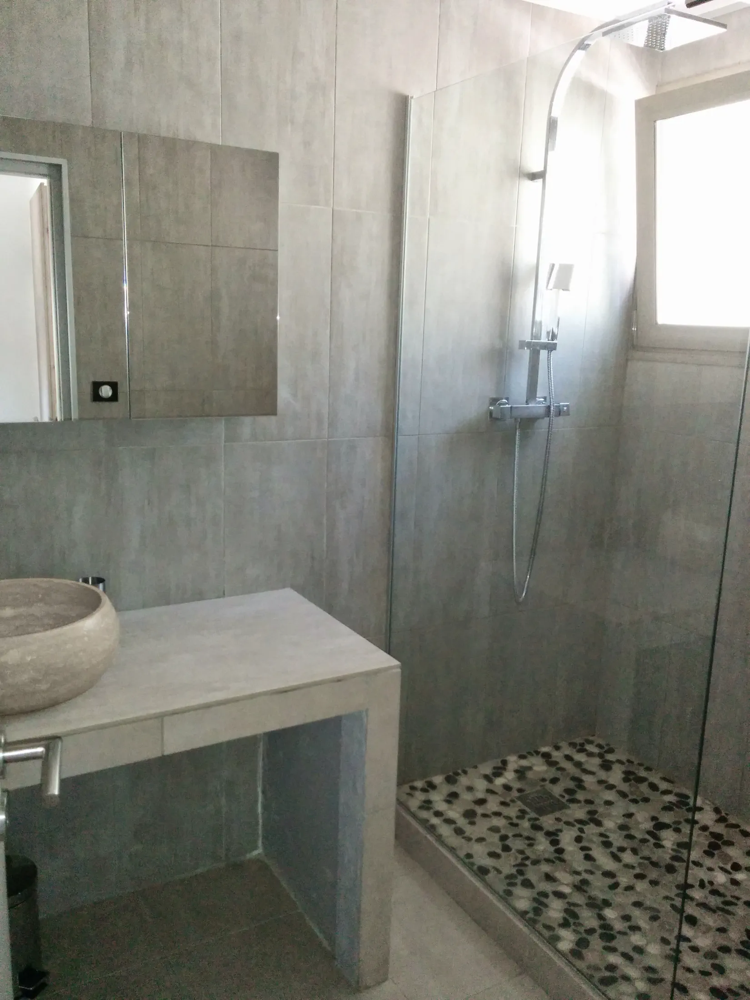
D'une pièce à l'autre, la rénovation reste cohérente, lumineuse et sans surcharge. Les espaces ont été pensés pour être faciles à vivre, aussi bien pour un long week-end que pour de vraies vacances en famille ou entre amis.
Les extérieurs
Aux beaux jours, la vie s'organise facilement entre la maison, la terrasse et la piscine. Le salon extérieur, les espaces repas et la piscine privée invitent à profiter pleinement du soleil du Sud, du matin jusqu'en fin de journée.
Avec ses vues dégagées, sa terrasse en bois et son atmosphère calme, l'extérieur prolonge naturellement le confort de la maison.
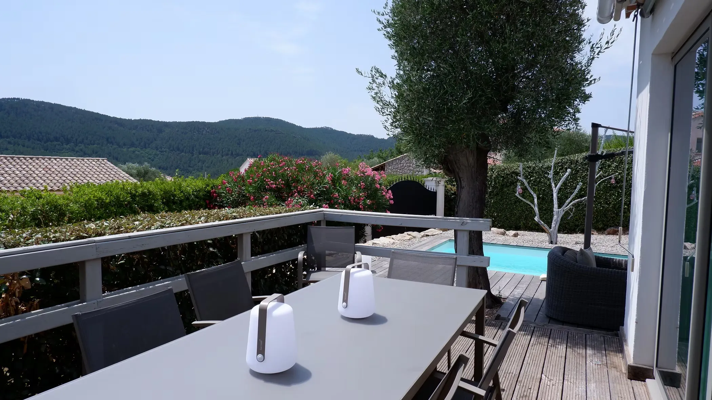
Infos pratiques
Commerces, restaurants et commodités du quotidien à proximité.
Sainte-Maxime, Cannes, Saint-Tropez, Nice et Fayence.
Contact
Pour toute demande d'information ou de disponibilité, vous pouvez nous écrire directement par e-mail ou nous appeler.
Nous serons ravis de vous renseigner sur la maison et votre séjour.